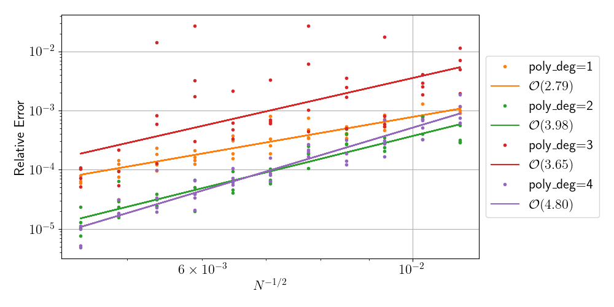

$\newcommand{vecx}{\vec{x}}$
$\newcommand{vecy}{\vec{y}}$


Group Update
Sage Shaw - May 30th, 2024
Kilpatrick Lab
Radial Basis Function Quadrature for Neural Field Equations
- Neural Field Model
- Radial Basis Function Quadrature Formulae
(RBF-QF) - Experimental Results
- Next Steps
Neural Field Model
Neural Field Model
$\partial_t \color{blue}{u}(t, \vecx) = -\color{blue}{u} + \int_{\Omega} \color{green}{w}(\vecx, \vecy) \color{red}{f}[\color{blue}{u}(\vecy)] d \vecy$
- $\color{blue}{u}(t, \vecx)$ - Activity
- $\color{green}{w}(\vecx, \vecy)$ - Connectivity kernel
- $\color{red}{f}[\color{blue}{u}]$ - non-linear firing rate function
Projection Method (Avitabile 2023)
| scalar: | $\partial_t u(t, \vecx) = -u + \int_\Omega w(\vecx, \vecy) f[u(t, \vecy)] \ d\vecy$ |
| Banach: | $\dot{U}(t) = -U + W(f[U])$ |
| projected: | $\dot{U}_n(t) = -U_n + W_n(f[U_n])$ |
| quadrature: | $\dot{\tilde{U}}_n(t) = -\tilde{U}_n + Q(f[\tilde{U}_n])$ |
Error = projection error + quadrature error
Radial Basis Function Quadrature Formulae
RBF-QF Goal:
- Given a set of points $\{\vecx_i\} \subset \Omega$
- find weights $\{w_i\}$
- such that $\int_\Omega f \approx \sum w_i \ f(\vecx_i)$
RBF-QF Algorithm
- choose quadrature nodes
- partition domain
- choose stencils
- integrate RBF interpolant
- sum over stencil and elements
RBF Interpolation Properties
- scattered nodes in any number of dimensions*
- mesh-free*
- arbitrary order of accuracy*
Experimental Results
Gaussian Test Functions
Gaussian Test Functions
Quadrature Convergence
Testing manufactured solution
Convergence

Next Steps
- Adapt to surfaces.
- Incorporate cortical spreading depression (CSD).
- Study the effects of realistic cortical curvature on CSD wave generation and propagation.